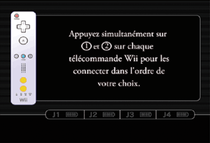

|
3
|
Utilisation de la manette
|

|

NOTE: si le guide de votre dragonne est muni d’un levier, abaissez-le jusqu’à ce que vous entendiez un clic. Cela permettra au guide de rester en place.
Cette procédure permet à la télécommande Wii de communiquer avec la console. La télécommande Wii fournie avec la console Wii a déjà été synchronisée avec celle-ci. Il existe deux modes de synchronisation différents. Mode standard – La procédure de synchronisation en mode standard sert à ajouter d’autres télécommandes Wii à votre console ou à effectuer une nouvelle synchronisation de votre télécommande Wii. Une fois synchronisée, la télécommande Wii le restera à moins que vous ne modifiiez cette configuration en la synchronisant avec une autre console.
Mode temporaire – Ce mode vous permet d’utiliser temporairement votre télécommande Wii sur une autre console et d’utiliser la télécommande Wii d’un ami avec votre console. NOTE: seule une télécommande Wii en mode standard peut allumer ou éteindre la console. Synchronisation en mode standard NOTE: assurez-vous que des piles sont insérées dans la télécommande Wii.

Cette procédure doit être effectuée à chaque fois que vous ajoutez une télécommande Wii à votre console.
NOTE: le nombre de témoins qui clignotent change en fonction de l’état des piles.
Synchronisation temporaire NOTE: ce mode vous permet d’annuler temporairement la configuration en mode standard de toutes les télécommandes Wii tant que la console reste allumée. Une fois la console rallumée, les télécommandes Wii fonctionneront en mode standard.

IMPORTANT: si votre télécommande Wii perd la synchronisation avec la console et que vous n’arrivez plus à les synchroniser, veuillez vous référer à la section "En cas de problèmes" concernant la télécommande Wii du mode d’emploi Wii – Installation de la console.
Lorsque vous utilisez la Wii Balance Board™, veuillez suivre les précautions d’emploi ci-dessous pour ne pas endommager la Wii Balance Board (ou d’autres objets environnants) et pour ne pas blesser autrui.
Suivez les étapes suivantes pour configurer la Wii Balance Board et l’utiliser.
IMPORTANT
|
 de la télécommande Wii synchronisée à la console.
de la télécommande Wii synchronisée à la console.

 et
et  des télécommandes Wii dont vous souhaitez modifier l’ordre.
des télécommandes Wii dont vous souhaitez modifier l’ordre.


|

|

|